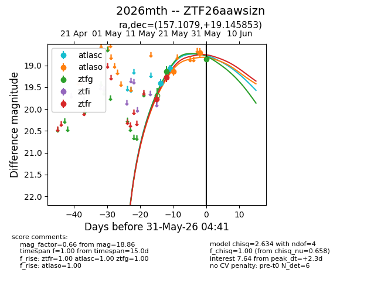
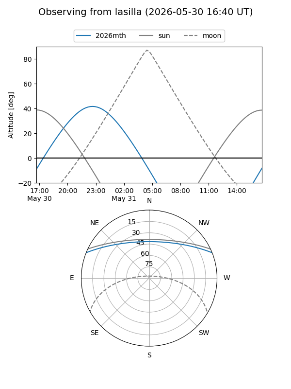
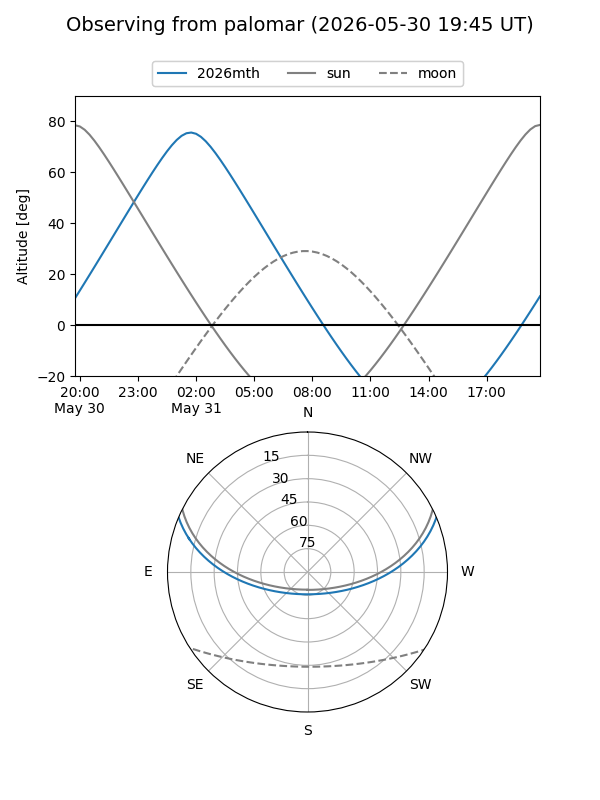
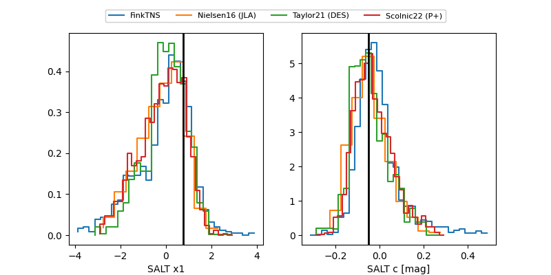

2026mth
Target 2026mth at 2026-05-31 04:43
Aliases and brokers:
lsst-FINK: link
lsst-Lasair: link
lsst-ALeRCE: link
ztf-FINK: link
ztf-Lasair: link
ztf-ALeRCE: link
TNS: link
YSE: link
alt names
ZTF26aawsizn (ztf,fink_ztf)
2026mth (tns,yse)
Coordinates:
equatorial (ra, dec) = 157.1079,+19.14585
equatorial (HMS+DMS) = 10:28:25.89,+19:08:45.07
galactic (l, b) = (218.8993,+56.29192)
Flags:
Photometry:
last atlasc=19.07, atlaso=18.71, ztfg=18.86, ztfr=19.27
2 atlasc, 2 atlaso, 2 ztfg, 2 ztfr detections
Lightcurve

Visibility


Additional plots
